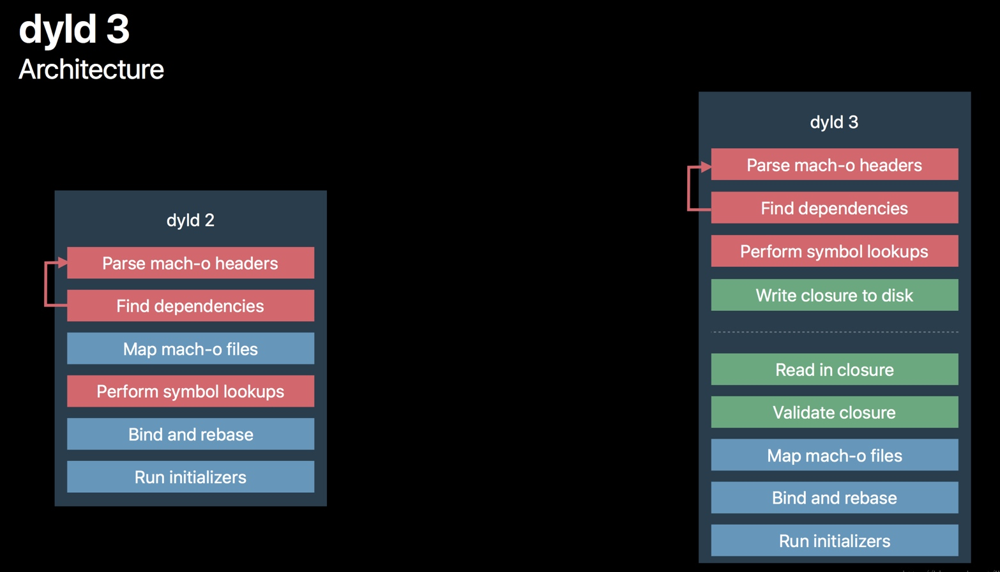
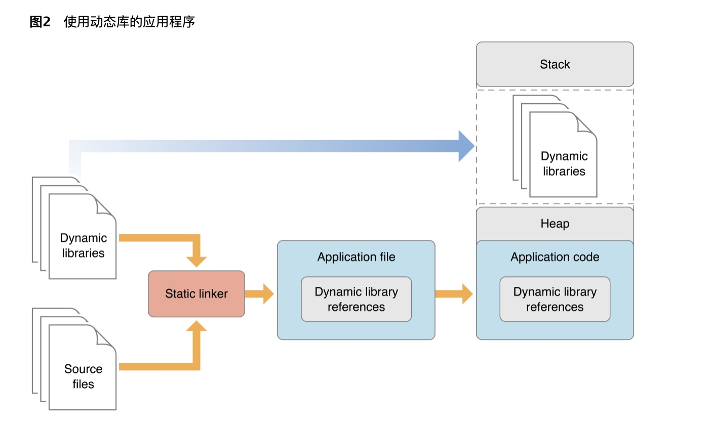

对启动做性能优化,首先要对整个的启动过程有一个非常详细的了解,在我们点击了 APP 图标之后,到 APP 启动成功进到第一个页面之后,这之间发生了什么?
启动的过程
准备知识
Mach-O
什么是 Mach-O?
Mach-O为Mach Object文件格式的缩写，它是一种用于可执行文件，目标代码，动态库，内核转储的文件格式。作为a.out格式的替代，Mach-O提供了更强的扩展性，并提升了符号表中信息的访问速度。
Mach-O曾经为大部分基于Mach核心的操作系统所使用。NeXTSTEP，Darwin和Mac OS X等系统使用这种格式作为其原生可执行文件，库和目标代码的格式。而同样使用GNU Mach作为其微内核的GNU Hurd系统则使用ELF而非Mach-O作为其标准的二进制文件格式。--维基百科
Mach-O 又包括:
- Executable 可执行文件
- Dylib 动态库
- Bundle 无法被链接的动态库,只能通过 dlopen()加载
- Image 指的是 Executable,Dylib 或者 Bundle 当中的一种.也叫镜像
- Framework 动态库和对应的头文件和资源文件的集合
Apple 出品的操作系统的可执行文件格式几乎都是 Mach-O,当然也包括 iOS.
Mach-O 的组成
Mach-O大致分为三部分
- Header 头部,包含可以自行的 CPU 架构,比如x86,arm64
- Load commands 加载命令,包含文件的组织架构和在虚拟内存中的布局方式
- Data,数据 包含 Load commands 中需要的各个段(segment)的数据,每一个 Segment 大小都必须是Page 的整数倍
那么 Data 部分又包含哪些 segment 呢?绝大多数 mach-o 文件都包括三个段
- __TEXT 代码段,只读,包含函数和只读的字符串,上图中的 _TEXT 和 _text 都是代码段
- __DATA 数据段,读写,包括可读写的全局变量等,上图中的 _DATA, _data 都是数据段
- __LINKEDIT __LINKEDIT包含了方法和变量的元数据(位置偏移量),以及代码的签名信息等
具体的关于 mach-o 的细节可以参考 Mac OS X ABI Mach-O File Format Reference这篇
dylib
dylib 也是一种 Mach-O 格式的文件, 后缀名为 .dylib的文件就是动态库(也叫动态链接库)
动态库是运行时加载的,可以被多个 app 共用
动态链接库分为系统 dylib 和 内嵌 dylib(embed dylib,即开发者手动引入的动态库)
系统 dylib 包括:
- iOS 中用到的所有系统 Framework,比如 UIKit,Foundation
- 系统级别的 libSystem(比如 libdispatch(GCD), libsystem_block(Block))
- 加载 OC Runtime 的 libobjc
dyld
dyld 的全称是 dynamic linker,他的作用是加载一个进程所需要的 image,dyld 是开源的
有关 dyld 的可以参考官方文档 Overview of Dynamic Libraries
dyld shared cache(动态库共享缓存)
当需要加载的动态库非常多时，相互依赖的符号也更多了，为了节省解析处理符号的时间，OS X 和 iOS 上的动态链接器使用了共享缓存
当加载一个 Mach-O 文件时，dyld 首先会检查是否存在于共享缓存，存在就直接取出使用。每一个进程都会把这个共享缓存映射到了自己的地址空间中。这种方法大大优化了 OS X 和 iOS 上程序的启动时间。
Vietual Memory(虚拟内存)
虚拟内存是在物理内存上建立的一个逻辑地址空间,它向上(应用)提供了一个连续的逻辑地址空间,向下隐藏了物理内存的细节
虚拟内存使得可以没有实际的物理地址,也可以让多个逻辑地址对应到一个物理地址
虚拟内存被划分为一个个大小相同的 Page(64 位系统上是 16KB),提高管理和读写效率
Page 又分为只读和读写的 Page
虚拟内存是建立在物理内存和进程之间的中间层.在 iOS 上,当内存不足的时候,会尝试释放那些只读的 Page,因为只读的 Page 在下次访问的时候,可以再充磁盘读取,如果没有可用内存,会通知在后台的 APP(也就是在这个时候收到了 memorywarning),如果在这之后仍然没有可用内存,就会杀死后台的 APP
Page fault
在应用执行的时候,他被分配的逻辑地址空间都是可以访问的,当应用访问一个逻辑 Page,而在对应的物理内存中并不存在的时候,这时候就发生了一次 Pagefault,当 Page fault 发生的时候,会中断当前的程序,在物理内存中寻找一个可用的 Page,然后从磁盘中读取数据到物理内存,接着执行当前的程序
DirtyPage & CleanPage
- 如果一个 Page 可以从磁盘上重新生成,那么这个 Page 称为 CleanPage
- 如果一个 Page 包含了进程相关信息,那么这个 Page 就是 DirtyPage
像代码段这种只读的 Page 就是 CleanPage,而像数据段(__DATA)这种读写的 Page,当写数据发生的时候,会触发 COW(Copy on Write),也就是写时复制,Page 会被标记成 Dirty,同时会被复制
详细的可以参考 Memory Usage Performance Guidelines 这篇
启动过程
使用 dyld2 启动应用的过程大致如下:

- 加载 dyld 到 APP 进程
- 加载动态库(包括所依赖的所有动态库)
- Rebase
- Bind
- 初始化 OC Runtime
- 其他的初始化代码
加载动态库
dyld 会首先读取 mach-o 文件的 Header 和 Loadcommands
接着就知道了这个可执行文件依赖的动态库,例如加载动态库 A 到内存,接着检查 A 所依赖的动态库,就这样递归加载,知道所有的动态库加载完毕,通常一个 APP 所依赖的动态库在 100-400 个左右,其中大部分是系统的动态库,他们会会缓存到 dyld shared cache,提高读取效率
Rebase & Bind
为了解决应用安全问题,苹果采用了 ASLR 和 Code Sign 技术
ASLR (Address space layout randomization) 地址空间布局随机化
APP在被启动的时候,程序会被映射到逻辑的地址空间,这个逻辑的地址空间有一个起始地址,而 ASLR 技术使得这个起始地址是随机的.
如果是固定的,黑客很容就可以由起始地址+偏移量找到函数的地址,不安全
Code Sign就是签名,在进行加密的时候，会对每一个Page（这里指的是Segment Data）都进行加密，当dyld进行加载的时候，会对每一个Page都进行独立的验证.
mach-o 中有很多符号,有指向当前 mach-o的,也有指向其他 dylib 的,比如 printf,mach-o 采用了 PIC (Position Independ Code)技术,当程序要调用 printf 的时候,会先在__DATA 段中建立一个指针指向 printf,在通过这个指针实现间接调用,dyld 这时候需要做一些 fix-up 的工作,帮助 app 找到这些符号的实际地址,主要包括两部分:
- Rebase 修正内部(指向当前的 mach-o 文件)的指针指向
- Bind 修正外部的指针指向
之所以需要 Rebase,是因为刚刚提到的 ASLR 使得地址随机化,导致起始地址不固定,另外由于 CodeSign,导致不能直接修改 Image. Rebase 的时候只需要增加对应的偏移量即可,待 Rebase 的数据都存放在__LINKEDIT 中.
Rebase 解决了内部的符号引用问题,而外部的符号引用则有 Bind 解决,在 Bind 的时候,是根据字符串匹配的方式查找符号表,所以这个过程相对于 Rebase 来说是略慢的
针对这一阶段的优化,常见的方案:
- 减少__DATA 段中的指针数量
- 合并 Category 和功能相似的类,比如UIView+Frame,UIView+AutoLayout…合并为一个
- 删除无用的类和方法(做一次全局的扫描,看哪些类和方法是没有使用的,删除)
- 不使用+load,使用 Initializer 替换,使用 dispath_once 初始化
Objective C
ObjectiveC 是动态语言,所以在执行 main 函数之前,需要把类的信息注册到一个全局的 Table 中,同时 OC 支持 Category,在初始化的时候,也会把 Category 中的方法注册到对应的类中,同时会唯一 Selector,这也是为啥当你 Category 实现了类中同名的方法后,类的方法会被覆盖
另外由于 iOS 是基于 Cocoa Touch 的,所以绝大多数的类起始都是系统类,所以大多数的 Runtime 初始化起始在 Rebase 和 Bind 中已经完成
完成 Rebas 和 Bind 之后,通知 Runtime 去做一些代码运行时需要做的事情:
- dylb 会注册所有声明过的 Objc 类
- 将分类插入到类的方法列表中
- 检查每个 selector 的唯一性
Initializers
接下来就是必要的初始化部分啦,主要包括几部分
- +load 方法
- C/C++静态初始化对象和标记为__attribute__(constructor)的方法
这里需要注意的是,尽量不要使用+load 方法,并且+load 方法已经弃用了,如果是 swift 开发,你会发现根本无法去写这样的一个方法,官方的建议是使用 initialize,区别就是 laod 是在类装载的时候执行,而 initialize 是在类第一次收到 message 前调用
dyld3
上面讲的 dyld2 的加载方式,最新的 dyld3 的加载方式略有不同

dyld2 是纯粹的 in-process,也就是在程序进程内执行的,也就意味着程序被启动的时候,dyld2 才开始执行任务
dyld3 则是部分 out-process,部分 in-process,上图中虚线之上的部分是 out-of-process 的,在 app 下载安装和版本更新的时候会去执行,out-of-process 会做如下的事情:
- 分析 Mach-O Headers
- 分析依赖的动态库
- 查找需要 Rebase & Bind 之类的符号
- 把上述结果写入缓存
这样在应用启动的时候,直接从缓存中读取数据,加快加载速度
优化启动时间
启动时间就是用户点击 APP 图标,到第一个界面展示的时间
以 main 函数为分水岭,包括两部分:main 函数之前和 main 函数到第一个界面的 viewDidAppear
所以优化方案也是分成两部分,pre-main 和 main
pre-main 的优化
main 函数到第一个界面展示的优化
延迟加载
等第一个界面启动完成之后再去做其他的操作
通常在 AppDelegate 中,初始化操作包扩两个方法:
* didFinishLaunchingWithOptions
* applicationDidBecomeActive
这里的初始化一般和业务逻辑相关,包括:
- 三方 SDK 初始化:比如 Crash 统计,分享,可以等第一次调用再初始化
- 初始化基础服务,比如 WatchDog,远程参数
- 启动相关日志,设计到数据库的操作一定要放到后台操作
- 页面创建使用纯代码创建,不要使用 storyboard,xib, storyboard,xib会涉及到界面到代码的转换,也是要耗费一些时间.界面复杂的话,约束多,时间增加很明显
启动时间的统计方案
1.对于 pre-main 阶段,Xcode 提供了方法可以打印各个阶段时间消耗的方法:
Product -> Scheme -> Edit Scheme -> Environment Variables 中将环境变量 DYLD_PRINT_STATISTICS设为1;
这里额外补充一下 dyld 变量的 参数
具体参考这篇
线上如何度量 pre-main 时间呢?
最容易想到的就是拦截打点,我们把目光转向 dyld 的源码,整个初始化都是从
initializeMainExecutable 方法开始的,dyld 会优先初始化动态库,然后初始化 APP 的可执行文件
void initializeMainExecutable()
{
// record that we've reached this step
gLinkContext.startedInitializingMainExecutable = true;
// run initialzers for any inserted dylibs
ImageLoader::InitializerTimingList initializerTimes[allImagesCount()];
initializerTimes[0].count = 0;
const size_t rootCount = sImageRoots.size();
if ( rootCount > 1 ) {
for(size_t i=1; i < rootCount; ++i) {
sImageRoots[i]->runInitializers(gLinkContext, initializerTimes[0]);
}
}
// run initializers for main executable and everything it brings up
sMainExecutable->runInitializers(gLinkContext, initializerTimes[0]);
动态库的 load 顺序是与 Load Commands 顺序和依赖关系息息相关的。如图所示：
找到最早加载的动态, 然后在其 load 函数中做 Hook 就可以
AFNetworking 会优先 load ，被依赖的动态库会优先 load
整体思路:
- 找到最早 load 的动态库
- 在 load 函数中获取 App 中的所有可执行文件
- hook 对应的可执行文件的 load 函数
- 统计每个 load 函数的时间、全部 load 函数的整体时间
- 上报统计分析
Hook 源码可以查看这个 load 函数的时间统计
代码瘦身
随着业务的迭代，不断有新的代码加入，同时也会废弃掉无用的代码和资源文件，但是工程中经常有无用的代码和文件被遗弃在角落里，没有及时被清理掉。这些无用的部分一方面增大了App的包体积，另一方便也拖慢了App的冷启动速度，所以及时清理掉这些无用的代码和资源十分有必要
通过对Mach-O文件的了解，可以知道__TEXT:__objc_methname:中包含了代码中的所有方法，而__DATA__objc_selrefs中则包含了所有被使用的方法的引用，通过取两个集合的差集就可以得到所有未被使用的代码。核心方法如下，具体可以参考: iOS代码瘦身
这个库有一个 python 文件,找到编译的.app 文件,拿到 mach-o 文件,
.app 的文件路径:
/Users/macongcong/Library/Developer/Xcode/DerivedData/ZongHeng-aywybrtvwtualiewcesrwkpnnviw/Build/Products/Debug-iphonesimulator
1,先到上面我们下载的那个 Python 文件路径下(终端里)
cd /Volumes/iMac/Users/macongcong/Downloads/selectorsunref-master/selectorsunref.py
去掉后面的selectorsunref.py,也就是
cd /Volumes/iMac/Users/macongcong/Downloads/selectorsunref-master/
然后给这个 Python 文件指定权限
chmod a+x selectorsunref.py
然后执行
./selectorsunref.py
然后执行我们的.app 文件路径
链接的动态库有哪些 哪些是可以去掉的
动态库 静态库区别
- 使用动态库可以减少应用程序的可执行文件的大小
- 动态库允许 APP 仅在需要的时候才延迟加载,有利于缩短启动时间
Two important factors that determine the performance of apps are their launch times and their memory footprints. Reducing the size of an app’s executable file and minimizing its use of memory once it’s launched make the app launch faster and use less memory once it’s launched. Using dynamic libraries instead of static libraries reduces the executable file size of an app. They also allow apps to delay loading libraries with special functionality only when they’re needed instead of at launch time. This feature contributes further to reduced launch times and efficient memory use ---- 官方文档
使用动态库与静态库 APP的对比

除了在启动时自动加载动态库之外，动态加载器还应应用程序的要求在运行时加载动态库。也就是说，如果应用程序在启动时不需要加载动态库，则开发人员可以选择不将应用程序的目标文件与动态库链接，而是仅在应用程序的各个部分中加载动态库。需要它。以这种方式使用动态库可以加快启动过程。
静态库与动态库的区别:
- 静态库: 链接时完整的拷贝到可执行文件中,多次使用就有多个冗余的拷贝(.a 和 .framework)
- 动态库: 链接时不复制,程序运行时由系统动态加载到内存,系统只加载一次,多个程序共用,节省内存 (.dylib 和 .framework)
为什么.framework既是静态库又是动态库?/
系统的.framework 是动态库,我们自己创建的.framework是静态库
.a 是一个纯二进制文件,不能直接使用,要配合.h 文件才能使用
.framework 除了二进制文件,还包括了资源文件,可以直接使用
.a + .h + sourceFile = .framework